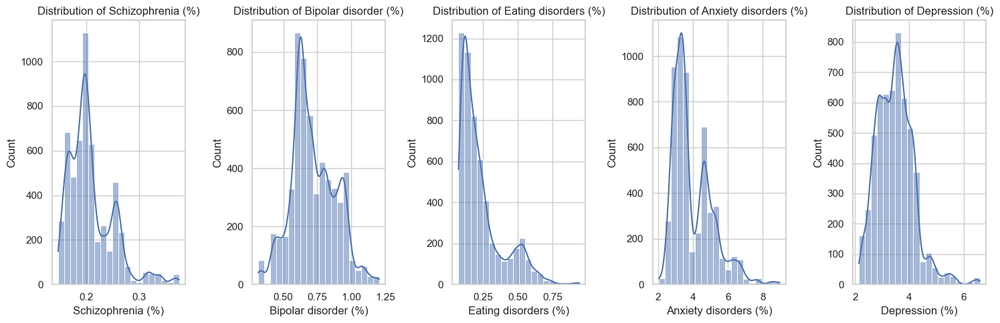
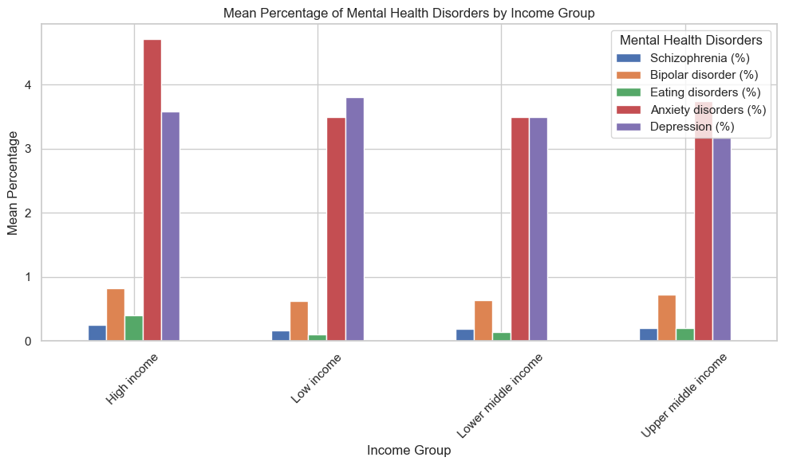
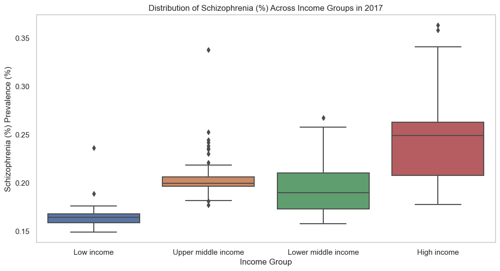
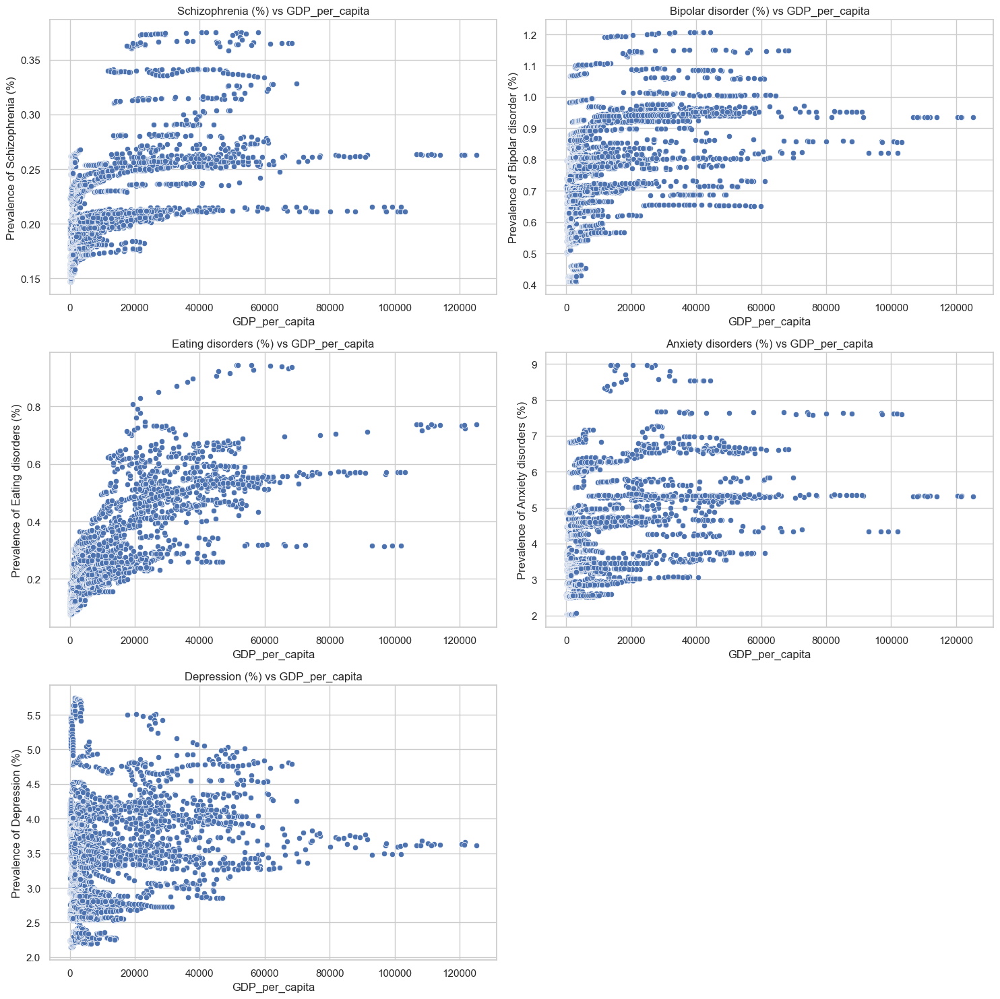
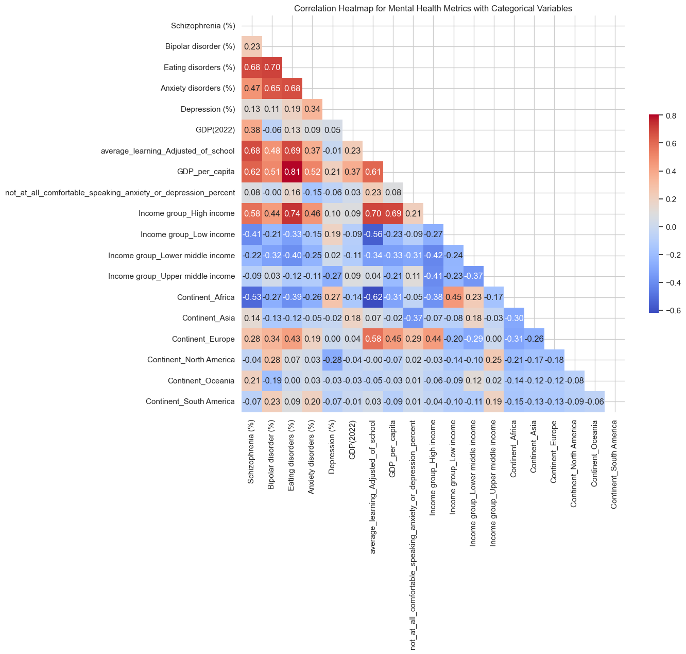
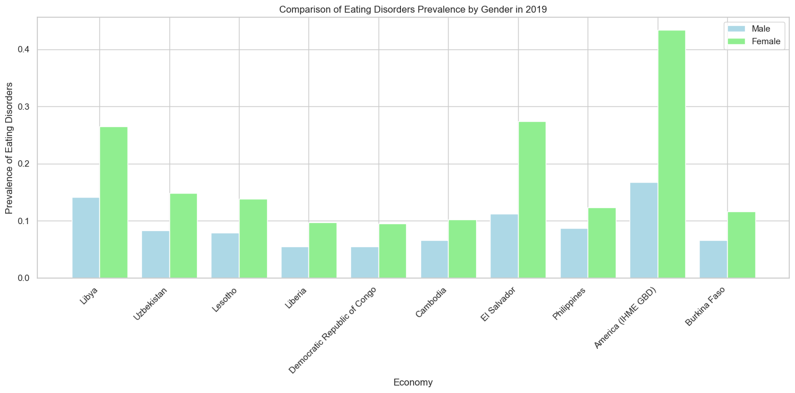

import pandas as pd
#load the data sets
df_age_first_depression=pd.read_csv('./Data/age_when_first_anxiety_or_depression.csv')
df_eating_disorder=pd.read_csv('./Data/eating_disorder_male_female.csv')
df_mental_health=pd.read_csv('./Data/mental_health.csv')
df_gdp_mental_health_2017=pd.read_csv('./Data/GDP_percaptita_mental_health_2017.csv')
df_mental_physical=pd.read_csv('./Data/symptoms.csv')Exploration
Data Understanding
- Mental Health Dataset
The dataset contains various mental health-related metrics for different economies over several years, with information from different years and countries, with percentages for various mental health conditions such as schizophrenia, bipolar disorder, eating disorders, anxiety disorders, and depression. Additional columns include economic indicators like income group, average learning adjusted years of school, continent, GDP for 2022, and a column related to comfort speaking about anxiety or depression, which has many missing values (NaN).
Economy: The name of the economy or country. Code: The country code.
Year: The year of the data record.
Schizophrenia (%): The prevalence of schizophrenia as a percentage. Bipolar disorder (%): The prevalence of bipolar disorder as a percentage.
Eating disorders (%): The prevalence of eating disorders as a percentage.
Anxiety disorders (%): The prevalence of anxiety disorders as a percentage.
Depression (%): The prevalence of depression as a percentage.
Income group: The income group classification of the economy.
average_learning_Adjusted_of_school: Some metric related to schooling, perhaps average years of schooling adjusted for learning.
Continent: The continent where the economy is located.
GDP(2022): The GDP of the economy for the year 2022.
not_at_all_comfortable_speaking_anxiety_or_depression_percent: The percentage of people not at all comfortable speaking about anxiety or depression
Records: 5,488 Variables: 13 (1 integer, 8 floats, 4 objects) Features: Includes country data, year, percentages for various mental health conditions, income group, average learning, continent, GDP, and comfort speaking about anxiety/depression.
name='mental_health'
df=df_mental_health
print(f"{'mental_health'} Dataset - First 5 Rows:")
display(df_mental_health.head())
print(f"\n{name} Dataset - Info:")
display(df.info())
print(f"{name} Dataset -Shape:")
display(df.shape)mental_health Dataset - First 5 Rows:
mental_health Dataset - Info:
<class 'pandas.core.frame.DataFrame'>
RangeIndex: 5488 entries, 0 to 5487
Data columns (total 13 columns):
# Column Non-Null Count Dtype
--- ------ -------------- -----
0 Economy 5488 non-null object
1 Code 5488 non-null object
2 Year 5488 non-null int64
3 Schizophrenia (%) 5488 non-null float64
4 Bipolar disorder (%) 5488 non-null float64
5 Eating disorders (%) 5488 non-null float64
6 Anxiety disorders (%) 5488 non-null float64
7 Depression (%) 5488 non-null float64
8 Income group 5432 non-null object
9 average_learning_Adjusted_of_school 4676 non-null float64
10 Continent 4900 non-null object
11 GDP(2022) 5264 non-null float64
12 not_at_all_comfortable_speaking_anxiety_or_depression_percent 3108 non-null float64
dtypes: float64(8), int64(1), object(4)
memory usage: 557.5+ KB
mental_health Dataset -Shape:| Economy | Code | Year | Schizophrenia (%) | Bipolar disorder (%) | Eating disorders (%) | Anxiety disorders (%) | Depression (%) | Income group | average_learning_Adjusted_of_school | Continent | GDP(2022) | not_at_all_comfortable_speaking_anxiety_or_depression_percent | |
|---|---|---|---|---|---|---|---|---|---|---|---|---|---|
| 0 | Afghanistan | AFG | 1990 | 0.160560 | 0.697779 | 0.101855 | 4.828830 | 4.071831 | Low income | 4.957542 | Asia | 14583.0 | NaN |
| 1 | Afghanistan | AFG | 1991 | 0.160312 | 0.697961 | 0.099313 | 4.829740 | 4.079531 | Low income | 4.957542 | Asia | 14583.0 | NaN |
| 2 | Afghanistan | AFG | 1992 | 0.160135 | 0.698107 | 0.096692 | 4.831108 | 4.088358 | Low income | 4.957542 | Asia | 14583.0 | NaN |
| 3 | Afghanistan | AFG | 1993 | 0.160037 | 0.698257 | 0.094336 | 4.830864 | 4.096190 | Low income | 4.957542 | Asia | 14583.0 | NaN |
| 4 | Afghanistan | AFG | 1994 | 0.160022 | 0.698469 | 0.092439 | 4.829423 | 4.099582 | Low income | 4.957542 | Asia | 14583.0 | NaN |
None(5488, 13)- Eating Disorder Dataset
This dataset includes the prevalence of eating disorders among males and females, as well as a combined figure for all genders, across different countries and years.
Country: The name of the country.
Country Code: The corresponding country code.
Year: The year of the observation.
Eating_disorders_Male: The prevalence of eating disorders among males.
Eating_disorders_Female: The prevalence of eating disorders among females.
All_gender: The prevalence of eating disorders across all genders.
Records: 6,420 Variables: 6 (1 integer, 3 floats, 2 objects) Features: Includes country data, year, and eating disorder prevalence separated by male, female, and all genders.
name='eating_disorder'
df=df_eating_disorder
print(f"{'eating_disorder'} Dataset - First 5 Rows:")
display(df_eating_disorder.head())
print(f"\n{name} Dataset - Info:")
display(df.info())
print(f"{name} Dataset -Shape:")
display(df.shape)eating_disorder Dataset - First 5 Rows:
eating_disorder Dataset - Info:
<class 'pandas.core.frame.DataFrame'>
RangeIndex: 6420 entries, 0 to 6419
Data columns (total 6 columns):
# Column Non-Null Count Dtype
--- ------ -------------- -----
0 Economy 6420 non-null object
1 Code 6150 non-null object
2 Year 6420 non-null int64
3 Eating_disorders_Male 6420 non-null float64
4 Eating_disorders_Female 6420 non-null float64
5 All_gender 6420 non-null float64
dtypes: float64(3), int64(1), object(2)
memory usage: 301.1+ KB
eating_disorder Dataset -Shape:| Economy | Code | Year | Eating_disorders_Male | Eating_disorders_Female | All_gender | |
|---|---|---|---|---|---|---|
| 0 | Afghanistan | AFG | 1990 | 0.088487 | 0.161867 | 0.125177 |
| 1 | Afghanistan | AFG | 1991 | 0.086048 | 0.156910 | 0.121479 |
| 2 | Afghanistan | AFG | 1992 | 0.083625 | 0.152412 | 0.118018 |
| 3 | Afghanistan | AFG | 1993 | 0.081628 | 0.147938 | 0.114783 |
| 4 | Afghanistan | AFG | 1994 | 0.079439 | 0.143980 | 0.111710 |
None(6420, 6)- Age When First Anxiety or Depression Dataset
The dataset contains information on the age at which individuals first experienced anxiety or depression, categorized by different entities (which seem to represent regions or income categories).
Entity: The region or income category.
Age: The age category when anxiety or depression was first experienced.
Percentage: The percentage of individuals in that entity and age category.
Records: 42 Variables: 3 (2 objects, 1 float) Features: Includes entity (could be country or other types of entities), age category, and percentage of individuals with first anxiety or depression experience.
name='age_first_depression'
df=df_age_first_depression
print(f"{'age_first_depression'} Dataset - First 5 Rows:")
display(df_age_first_depression.head())
print(f"\n{name} Dataset - Info:")
display(df.info())
print(f"{name} Dataset -Shape:")
display(df.shape)age_first_depression Dataset - First 5 Rows:
age_first_depression Dataset - Info:
<class 'pandas.core.frame.DataFrame'>
RangeIndex: 42 entries, 0 to 41
Data columns (total 3 columns):
# Column Non-Null Count Dtype
--- ------ -------------- -----
0 Entity 42 non-null object
1 Age 42 non-null object
2 Percentage 42 non-null float64
dtypes: float64(1), object(2)
memory usage: 1.1+ KB
age_first_depression Dataset -Shape:| Entity | Age | Percentage | |
|---|---|---|---|
| 0 | Africa | Ages <13 | 1.271836 |
| 1 | Asia | Ages <13 | 7.795371 |
| 2 | Europe | Ages <13 | 9.083381 |
| 3 | High-income countries | Ages <13 | 2.473921 |
| 4 | Lower-middle-income countries | Ages <13 | 8.800553 |
None(42, 3)name='df_gdp_mental_health_2017'
df=df_gdp_mental_health_2017
print(f"{'name'} Dataset - First 5 Rows:")
display(df.head())
print(f"\n{name} Dataset - Info:")
display(df.info())
print(f"{name} Dataset -Shape:")
display(df.shape)name Dataset - First 5 Rows:
df_gdp_mental_health_2017 Dataset - Info:
<class 'pandas.core.frame.DataFrame'>
RangeIndex: 166 entries, 0 to 165
Data columns (total 7 columns):
# Column Non-Null Count Dtype
--- ------ -------------- -----
0 Economy 166 non-null object
1 2017 166 non-null object
2 Schizophrenia (%) 166 non-null float64
3 Bipolar disorder (%) 166 non-null float64
4 Eating disorders (%) 166 non-null float64
5 Anxiety disorders (%) 166 non-null float64
6 Depression (%) 166 non-null float64
dtypes: float64(5), object(2)
memory usage: 9.2+ KB
df_gdp_mental_health_2017 Dataset -Shape:| Economy | 2017 | Schizophrenia (%) | Bipolar disorder (%) | Eating disorders (%) | Anxiety disorders (%) | Depression (%) | |
|---|---|---|---|---|---|---|---|
| 0 | Afghanistan | 635.789 | 0.166158 | 0.708089 | 0.107142 | 4.882481 | 4.136347 |
| 1 | Albania | 4525.887 | 0.201025 | 0.704480 | 0.174046 | 3.385245 | 2.208414 |
| 2 | Algeria | 4014.707 | 0.197913 | 0.818687 | 0.213612 | 5.065876 | 3.661094 |
| 3 | Andorra | 40017.741 | 0.263512 | 0.963331 | 0.644559 | 5.305375 | 3.729532 |
| 4 | Angola | 4039.3 | 0.172794 | 0.623904 | 0.173643 | 3.296906 | 4.160484 |
None(166, 7)- GDP_per_captita Dataset
The dataset contains various mental health-related metrics for different economies over several years, with information from different years and countries, with percentages for various mental health conditions such as schizophrenia, bipolar disorder, eating disorders, anxiety disorders, and depression. Additional columns include economic indicator like GDP per captita.
Economy: The name of the economy or country. Year: The GDP_per_captita of the year 2017 of the economy or country. Schizophrenia (%): The prevalence of schizophrenia as a percentage. Bipolar disorder (%): The prevalence of bipolar disorder as a percentage. Eating disorders (%): The prevalence of eating disorders as a percentage. Anxiety disorders (%): The prevalence of anxiety disorders as a percentage. Depression (%): The prevalence of depression as a percentage.
Records: 166 Variables, 7 features ( 2 objects, 5 float) features:
name='df_gdp_mental_health_2017'
df=df_gdp_mental_health_2017
print(f"{'name'} Dataset - First 5 Rows:")
display(df.head())
print(f"\n{name} Dataset - Info:")
display(df.info())
print(f"{name} Dataset -Shape:")
display(df.shape)name Dataset - First 5 Rows:
df_gdp_mental_health_2017 Dataset - Info:
<class 'pandas.core.frame.DataFrame'>
RangeIndex: 166 entries, 0 to 165
Data columns (total 7 columns):
# Column Non-Null Count Dtype
--- ------ -------------- -----
0 Economy 166 non-null object
1 2017 166 non-null object
2 Schizophrenia (%) 166 non-null float64
3 Bipolar disorder (%) 166 non-null float64
4 Eating disorders (%) 166 non-null float64
5 Anxiety disorders (%) 166 non-null float64
6 Depression (%) 166 non-null float64
dtypes: float64(5), object(2)
memory usage: 9.2+ KB
df_gdp_mental_health_2017 Dataset -Shape:| Economy | 2017 | Schizophrenia (%) | Bipolar disorder (%) | Eating disorders (%) | Anxiety disorders (%) | Depression (%) | |
|---|---|---|---|---|---|---|---|
| 0 | Afghanistan | 635.789 | 0.166158 | 0.708089 | 0.107142 | 4.882481 | 4.136347 |
| 1 | Albania | 4525.887 | 0.201025 | 0.704480 | 0.174046 | 3.385245 | 2.208414 |
| 2 | Algeria | 4014.707 | 0.197913 | 0.818687 | 0.213612 | 5.065876 | 3.661094 |
| 3 | Andorra | 40017.741 | 0.263512 | 0.963331 | 0.644559 | 5.305375 | 3.729532 |
| 4 | Angola | 4039.3 | 0.172794 | 0.623904 | 0.173643 | 3.296906 | 4.160484 |
None(166, 7)5.Symtoms dataset
This dataset contains 2 columns,one is symtoms of health problem and another is related to the respective health problem(mental or Physical).
name='df_mental_physical'
df=df_mental_physical
print(f"{'name'} Dataset - First 5 Rows:")
display(df.head())
print(f"\n{name} Dataset - Info:")
display(df.info())
print(f"{name} Dataset -Shape:")
display(df.shape)name Dataset - First 5 Rows:
df_mental_physical Dataset - Info:
<class 'pandas.core.frame.DataFrame'>
RangeIndex: 186 entries, 0 to 185
Data columns (total 2 columns):
# Column Non-Null Count Dtype
--- ------ -------------- -----
0 Symptoms 186 non-null object
1 Label 186 non-null object
dtypes: object(2)
memory usage: 3.0+ KB
df_mental_physical Dataset -Shape:| Symptoms | Label | |
|---|---|---|
| 0 | I often experience shortness of breath. | Physical health |
| 1 | I have been feeling persistent fatigue lately. | Physical health |
| 2 | I am experiencing unexplained weight loss. | Physical health |
| 3 | I have a consistent cough that won't go away. | Physical health |
| 4 | I am dealing with frequent headaches. | Physical health |
None(186, 2)Descriptive Statistics & Data Visualization & Corralation Analysis & Data Grouping and Segmentation
Calculate and report basic summary statistics for the datasets.
This will include mean, median, mode, standard deviation, and variance for numerical variables. For categorical variables, we’ll provide frequency distributions.
description_stats={
"age_first_depression_or_anxiety":df_age_first_depression.describe(include='all'),
"eating_disorder":df_eating_disorder.describe(include='all'),
'gdp_mental_health_2017':df_gdp_mental_health_2017.describe(include='all'),
"mental_health":df_mental_health.describe(include='all'),
}
description_stats{'age_first_depression_or_anxiety': Entity Age Percentage
count 42 42 42.000000
unique 7 6 NaN
top Africa Ages <13 NaN
freq 6 7 NaN
mean NaN NaN 16.666667
std NaN NaN 10.060695
min NaN NaN 1.271836
25% NaN NaN 8.871260
50% NaN NaN 14.426575
75% NaN NaN 22.251861
max NaN NaN 42.724724,
'eating_disorder': Economy Code Year Eating_disorders_Male \
count 6420 6150 6420.000000 6420.000000
unique 214 205 NaN NaN
top Afghanistan AFG NaN NaN
freq 30 30 NaN NaN
mean NaN NaN 2004.500000 0.119775
std NaN NaN 8.656116 0.068943
min NaN NaN 1990.000000 0.033360
25% NaN NaN 1997.000000 0.071057
50% NaN NaN 2004.500000 0.098256
75% NaN NaN 2012.000000 0.148705
max NaN NaN 2019.000000 0.672270
Eating_disorders_Female All_gender
count 6420.000000 6420.000000
unique NaN NaN
top NaN NaN
freq NaN NaN
mean 0.273787 0.196781
std 0.214920 0.140066
min 0.056762 0.045083
25% 0.121105 0.096171
50% 0.187430 0.144395
75% 0.352395 0.252282
max 1.395754 1.034012 ,
'gdp_mental_health_2017': Economy 2017 Schizophrenia (%) Bipolar disorder (%) \
count 166 166 166.000000 166.000000
unique 166 166 NaN NaN
top Afghanistan 635.789 NaN NaN
freq 1 1 NaN NaN
mean NaN NaN 0.210030 0.736341
std NaN NaN 0.040753 0.157692
min NaN NaN 0.149087 0.411127
25% NaN NaN 0.182119 0.626204
50% NaN NaN 0.201004 0.708670
75% NaN NaN 0.234878 0.845505
max NaN NaN 0.363326 1.206088
Eating disorders (%) Anxiety disorders (%) Depression (%)
count 166.000000 166.000000 166.000000
unique NaN NaN NaN
top NaN NaN NaN
freq NaN NaN NaN
mean 0.260652 4.024311 3.443300
std 0.167330 1.176412 0.621952
min 0.079896 2.066871 2.196154
25% 0.136695 3.187924 2.958046
50% 0.204115 3.593617 3.463656
75% 0.307116 4.712918 3.828232
max 0.943081 8.539931 5.636661 ,
'mental_health': Economy Code Year Schizophrenia (%) \
count 5488 5488 5488.000000 5488.000000
unique 196 196 NaN NaN
top Afghanistan AFG NaN NaN
freq 28 28 NaN NaN
mean NaN NaN 2003.500000 0.208183
std NaN NaN 8.078483 0.041998
min NaN NaN 1990.000000 0.146902
25% NaN NaN 1996.750000 0.179452
50% NaN NaN 2003.500000 0.198509
75% NaN NaN 2010.250000 0.230554
max NaN NaN 2017.000000 0.375110
Bipolar disorder (%) Eating disorders (%) Anxiety disorders (%) \
count 5488.000000 5488.000000 5488.000000
unique NaN NaN NaN
top NaN NaN NaN
freq NaN NaN NaN
mean 0.716884 0.234023 3.946979
std 0.164246 0.154147 1.134810
min 0.314535 0.073908 2.023393
25% 0.615732 0.121760 3.178912
50% 0.693954 0.180378 3.515140
75% 0.830217 0.278681 4.659540
max 1.206597 0.943991 8.967330
Depression (%) Income group average_learning_Adjusted_of_school \
count 5488.000000 5432 4676.000000
unique NaN 4 NaN
top NaN High income NaN
freq NaN 1764 NaN
mean 3.474504 NaN 7.760170
std 0.671741 NaN 2.528810
min 2.139903 NaN 2.251002
25% 2.955355 NaN 5.684793
50% 3.461421 NaN 7.855914
75% 3.877343 NaN 10.048229
max 6.602754 NaN 12.775495
Continent GDP(2022) \
count 4900 5.264000e+03
unique 6 NaN
top Africa NaN
freq 1428 NaN
mean NaN 3.929245e+05
std NaN 1.451071e+06
min NaN 2.230000e+02
25% NaN 1.240875e+04
50% NaN 4.239550e+04
75% NaN 2.550042e+05
max NaN 1.796317e+07
not_at_all_comfortable_speaking_anxiety_or_depression_percent
count 3108.000000
unique NaN
top NaN
freq NaN
mean 30.009805
std 11.940808
min 5.833535
25% 21.170624
50% 30.920343
75% 37.729200
max 58.778120 }Mental Health Dataset
Correlation Heatmap: To see how different types of mental health disorders are correlated with each other.
Time Series Plot: To observe the trend of a specific disorder over time for a particular economy or aggregated globally.
Bar Chart: To compare the prevalence of different disorders in a specific year across multiple economies.
Box Plot: To visualize the distribution of prevalence rates for a particular disorder across different income groups or continents.
Scatter Plot: To examine the relationship between GDP and the prevalence of a particular disorder or the discomfort in speaking about mental health issues.
Histograms for mental disorders
import matplotlib.pyplot as plt
import seaborn as sns
# Set the aesthetics for the plots
sns.set(style="whitegrid")
# Define a function to create histograms for given columns
def plot_histograms(data, columns, bins=20, figsize=(15, 5)):
fig, axes = plt.subplots(1, len(columns), figsize=figsize)
for ax, col in zip(axes, columns):
sns.histplot(data[col].dropna(), bins=bins, ax=ax, kde=True) # Drop NaN for plotting
ax.set_title(f'Distribution of {col}')
plt.tight_layout()
return fig
# Select columns to plot for Mental Health Data (excluding 'Year' and non-numerical columns)
mental_health_columns = ['Schizophrenia (%)', 'Bipolar disorder (%)',
'Eating disorders (%)', 'Anxiety disorders (%)', 'Depression (%)']
# Plot histograms for the selected columns
histograms_mental_health = plot_histograms(df_mental_health, mental_health_columns)
Time Series Plot
Global trend of ‘Depression (%)’ over time.
import matplotlib.pyplot as plt
import pandas as pd
import numpy as np
# Assuming df_mental_health is your DataFrame
# Replace 'df_mental_health' with the actual name of your DataFrame if different
# Aggregate the data by Year and calculate the mean for each disorder
annual_prevalence = df_mental_health.groupby('Year').mean().reset_index()
# Plotting each mental health disorder prevalence over time
plt.figure(figsize=(14, 7))
# For each disorder, we plot a line chart
for column in annual_prevalence.columns[1:-3]: # Selecting only disorder columns
plt.plot(annual_prevalence['Year'], annual_prevalence[column], label=column)
# Adding titles and labels
plt.title('Mental Health Disorders Prevalence Over Time')
plt.xlabel('Year')
plt.ylabel('Prevalence (%)')
# Adjusting the Y-axis ticks to have increments of 0.3
plt.yticks(np.arange(start=0, stop=annual_prevalence.iloc[:, 1:-3].max().max() + 0.1, step=0.1))
plt.legend(loc='upper right')
plt.grid(True)
# Show the plot
plt.show()/var/folders/px/bhxss9d10zs_wzsv0ck6sb200000gn/T/ipykernel_22998/3393605761.py:9: FutureWarning: The default value of numeric_only in DataFrameGroupBy.mean is deprecated. In a future version, numeric_only will default to False. Either specify numeric_only or select only columns which should be valid for the function.
annual_prevalence = df_mental_health.groupby('Year').mean().reset_index()
import matplotlib.pyplot as plt
import pandas as pd
# Assuming df_mental_health is your DataFrame
# Replace 'df_mental_health' with the actual name of your DataFrame if different
# Aggregate the data by Year and calculate the mean for each disorder
annual_prevalence = df_mental_health.groupby('Year').mean().reset_index()
# Determine the number of disorders to plot
num_disorders = len(annual_prevalence.columns[1:-3])
# Creating subplots
fig, axes = plt.subplots(num_disorders, 1, figsize=(14, 6 * num_disorders))
# Plotting each disorder in a separate subplot
for i, column in enumerate(annual_prevalence.columns[1:-3]):
axes[i].plot(annual_prevalence['Year'], annual_prevalence[column], label=column)
axes[i].set_title(column)
axes[i].set_xlabel('Year')
axes[i].set_ylabel('Prevalence (%)')
axes[i].grid(True)
plt.tight_layout()
plt.show()/var/folders/px/bhxss9d10zs_wzsv0ck6sb200000gn/T/ipykernel_22998/2989151303.py:8: FutureWarning: The default value of numeric_only in DataFrameGroupBy.mean is deprecated. In a future version, numeric_only will default to False. Either specify numeric_only or select only columns which should be valid for the function.
annual_prevalence = df_mental_health.groupby('Year').mean().reset_index()
Anxiety disorders and depression show higher prevalence rates compared to other disorders like schizophrenia, bipolar disorder, and eating disorders. This could indicate that anxiety and depression are more common mental health concerns in the population.
The prevalence rates for disorders like schizophrenia, bipolar disorder, eating disorders, anxiety disorders, and depression appear relatively stable over the years in the dataset. But e schizophrenia, bipolar disorder, eating disorders, anxiety disorders slightly increases over the years, while the depression does not.
The Bar plot
import pandas as pd
import matplotlib.pyplot as plt
df_income_group=df_mental_health.groupby('Income group').mean()
# print(df_income_group)
df_income_group=df_income_group.drop(columns=['Year','GDP(2022)','not_at_all_comfortable_speaking_anxiety_or_depression_percent','average_learning_Adjusted_of_school'])
# print(type(df_income_group))
print(df_income_group)
# Plotting
fig, ax = plt.subplots(figsize=(10, 6))
df_income_group.plot(kind='bar', ax=ax)
# Customization
ax.set_title('Mean Percentage of Mental Health Disorders by Income Group')
ax.set_ylabel('Mean Percentage')
ax.set_xlabel('Income Group')
plt.xticks(rotation=45)
plt.legend(title='Mental Health Disorders')
plt.tight_layout()
# Display the plot
plt.show() Schizophrenia (%) Bipolar disorder (%) \
Income group
High income 0.243514 0.822296
Low income 0.164570 0.626751
Lower middle income 0.192946 0.631165
Upper middle income 0.202089 0.724714
Eating disorders (%) Anxiety disorders (%) \
Income group
High income 0.399097 4.707860
Low income 0.102740 3.500061
Lower middle income 0.134964 3.493755
Upper middle income 0.202037 3.739220
Depression (%)
Income group
High income 3.575551
Low income 3.804767
Lower middle income 3.495127
Upper middle income 3.172075 /var/folders/px/bhxss9d10zs_wzsv0ck6sb200000gn/T/ipykernel_22998/4104045031.py:4: FutureWarning: The default value of numeric_only in DataFrameGroupBy.mean is deprecated. In a future version, numeric_only will default to False. Either specify numeric_only or select only columns which should be valid for the function.
df_income_group=df_mental_health.groupby('Income group').mean()
The updated heatmap now includes the one-hot encoded categorical variables ‘Income group’ and ‘Continent’. Due to the number of categories, the annotations were turned off to keep the heatmap readable. Each square still represents the correlation between two variables, with warmer colors indicating a stronger positive correlation and cooler colors a stronger negative correlation.
Data Grouping and Segmentation
The Box Plot
Box Plot: Distribution of ‘Bipolar disorder (%)’ prevalence rates across different income groups
import matplotlib.pyplot as plt
import seaborn as sns
import pandas as pd
# Assuming df_mental_health is your DataFrame
# Replace 'df_mental_health' with the actual name of your DataFrame if different
most_recent_year = df_mental_health['Year'].max()
# Disorders to plot
disorders = ['Bipolar disorder (%)', 'Schizophrenia (%)', 'Eating disorders (%)', 'Anxiety disorders (%)', 'Depression (%)']
# Creating box plots for each disorder
for disorder in disorders:
# Filter the data for the disorder for the most recent year
disorder_data_recent_year = df_mental_health[df_mental_health['Year'] == most_recent_year]
plt.figure(figsize=(12, 6))
sns.boxplot(data=disorder_data_recent_year, x='Income group', y=disorder)
plt.title(f'Distribution of {disorder} Across Income Groups in {most_recent_year}')
plt.xlabel('Income Group')
plt.ylabel(f'{disorder} Prevalence (%)')
plt.grid(axis='y')
plt.show()

The plot provides insights into the median prevalence rates, the interquartile ranges, and any potential outliers within each income group category.
The Box Plot above shows the distribution of ‘Bipolar disorder (%)’, ‘Schizophrenia (%)’, ‘Eating disorders (%)’, ’Anxiety disorders (%)’prevalence vary by income group,while the Depression doesn’t vary by income group.
The scatter plot
Scatter Plot 1: Relationship between ‘average learning adjusted years of school’ and ‘Depression (%)’
# This function will adjust the number of subplots based on the number of disorders.
def create_scatter_plots(dataframe, x_col, y_cols, row_col_count):
# Calculate the number of rows and columns needed for the subplots
total_plots = len(y_cols)
nrows = (total_plots + row_col_count - 1) // row_col_count # Ceiling division
ncols = row_col_count
# Create subplots
fig, axes = plt.subplots(nrows, ncols, figsize=(15, nrows * 5))
if nrows == 1:
axes = [axes] # Ensure axes is always a list
else:
axes = axes.flatten()
# Generate scatter plots
for i, y_col in enumerate(y_cols):
sns.scatterplot(ax=axes[i], data=dataframe, x=x_col, y=y_col)
axes[i].set_title(f'{y_col} vs {x_col}')
axes[i].set_xlabel(x_col)
axes[i].set_ylabel(f'Prevalence of {y_col}')
# Hide any unused subplots
for j in range(i+1, len(axes)):
axes[j].set_visible(False)
# Adjust layout
plt.tight_layout()
plt.show()
education_col = 'average_learning_Adjusted_of_school'
mental_health_disorders = [
'Schizophrenia (%)', # The prevalence of schizophrenia as a percentage
'Bipolar disorder (%)', # The prevalence of bipolar disorder as a percentage
'Eating disorders (%)', # The prevalence of eating disorders as a percentage
'Anxiety disorders (%)' , # The prevalence of anxiety disorders as a percentage
'Depression (%)' # The prevalence of depression as a percentage
]
# Now let's use the function to create scatter plots
create_scatter_plots(df_mental_health, education_col, mental_health_disorders, 2)
Schizophrenia: There appears to be a cluster of points towards the lower end of the educational scale with varying prevalence rates. As education levels increase, the prevalence rates seem to spread out, indicating a less clear relationship.
Bipolar Disorder: The data points are dispersed across the educational spectrum with no clear trend indicating a strong relationship between education and the prevalence of bipolar disorder.
Eating Disorders: This plot shows a somewhat more dispersed distribution, suggesting that higher education levels might not necessarily correlate with higher or lower prevalence rates of eating disorders.
Anxiety Disorders: There’s a wide spread of prevalence rates at all levels of education, suggesting that the relationship between education and anxiety disorders may be influenced by factors other than education alone.
Depression (%): There’s a wide spread of prevalence rates at all levels of education, suggesting that the relationship between education and Depression disorders may be influenced by factors other than education alone.
Scatter Plot 2: Relationship between ‘GDP(2022)’ and ‘Depression (%)’
# This function will adjust the number of subplots based on the number of disorders.
def create_scatter_plots(dataframe, x_col, y_cols, row_col_count):
# Calculate the number of rows and columns needed for the subplots
total_plots = len(y_cols)
nrows = (total_plots + row_col_count - 1) // row_col_count # Ceiling division
ncols = row_col_count
# Create subplots
fig, axes = plt.subplots(nrows, ncols, figsize=(15, nrows * 5))
if nrows == 1:
axes = [axes] # Ensure axes is always a list
else:
axes = axes.flatten()
# Generate scatter plots
for i, y_col in enumerate(y_cols):
sns.scatterplot(ax=axes[i], data=dataframe, x=x_col, y=y_col)
axes[i].set_title(f'{y_col} vs {x_col}')
axes[i].set_xlabel(x_col)
axes[i].set_ylabel(f'Prevalence of {y_col}')
# Hide any unused subplots
for j in range(i+1, len(axes)):
axes[j].set_visible(False)
# Adjust layout
plt.tight_layout()
plt.show()
gdp_col = 'GDP(2022)'
mental_health_disorders = [
'Schizophrenia (%)', # The prevalence of schizophrenia as a percentage
'Bipolar disorder (%)', # The prevalence of bipolar disorder as a percentage
'Eating disorders (%)', # The prevalence of eating disorders as a percentage
'Anxiety disorders (%)' , # The prevalence of anxiety disorders as a percentage
'Depression (%)' # The prevalence of depression as a percentage
]
# Now let's use the function to create scatter plots
create_scatter_plots(df_mental_health, gdp_col, mental_health_disorders, 2)
The scatter plots show that there’s a cluster of data points at lower GDP values with a wide range of mental health problems prevalence and they does not appear to be a clear trend or correlation between GDP and the prevalence of these mental health problems.
Corralation Analysis
Correlation Heatmap
‘Income group’ and ‘Continent’ to the list of columns for the correlation matrix, which are categorical variables. The correlation matrix typically requires numerical variables. To include these categorical variables, I convert them into a numerical format using techniques such as one-hot encoding.
import numpy as np
correlation_columns = [
'Schizophrenia (%)',
'Bipolar disorder (%)',
'Eating disorders (%)',
'Anxiety disorders (%)',
'Depression (%)',
'GDP(2022)',
'average_learning_Adjusted_of_school',
# 'Income group',
# 'Continent',
]
# One-hot encoding the 'Income group' and 'Continent' columns to include them in the correlation matrix
encoded_data = pd.get_dummies(df_mental_health, columns=['Income group', 'Continent'])
# Updating the correlation_columns list to include the newly created one-hot encoded columns
new_correlation_columns = correlation_columns + list(encoded_data.columns[encoded_data.columns.str.startswith('Income group_')]) + list(encoded_data.columns[encoded_data.columns.str.startswith('Continent_')])
# Calculate the new correlation matrix including the one-hot encoded columns
new_correlation_matrix = encoded_data[new_correlation_columns].corr()
# Generate a mask for the upper triangle
mask = np.triu(np.ones_like(new_correlation_matrix, dtype=bool))
# Set up the matplotlib figure
plt.figure(figsize=(12, 10))
# Draw the heatmap with the mask
sns.heatmap(new_correlation_matrix, mask=mask, annot=False, fmt=".2f", cmap='coolwarm', cbar_kws={"shrink": .5})
# Add title
plt.title('Correlation Heatmap for Mental Health Metrics with Categorical Variables')
# Show the heatmap
plt.show()
Eating disorder Dataset
Time Series Line Plot: Showing the trend of eating disorder prevalence over years for a specific country or averaged globally.
Bar Chart: Comparing the prevalence of eating disorders between males and females across different countries.
Box Plot: Displaying the distribution of eating disorder prevalence for all countries across different years to see the variability and outliers.
Heatmap: Visualizing the prevalence of eating disorders across countries and years in a color-coded format.
Scatter Plot: Comparing the male vs. female prevalence of eating disorders to see the correlation between genders.
Time Series Line Plot:
import matplotlib.pyplot as plt
import seaborn as sns
# Calculate the average prevalence of eating disorders for each year across all countries
average_eating_disorders_per_year = df_eating_disorder.groupby('Year').mean().reset_index()
# Time Series Line Plot for the global trend
plt.figure(figsize=(14, 7))
# Plotting the trends for each gender and all genders combined
sns.lineplot(data=average_eating_disorders_per_year, x='Year', y='Eating_disorders_Male', label='Male')
sns.lineplot(data=average_eating_disorders_per_year, x='Year', y='Eating_disorders_Female', label='Female')
sns.lineplot(data=average_eating_disorders_per_year, x='Year', y='All_gender', label='All Genders')
plt.title('Global Average Prevalence of Eating Disorders Over Time')
plt.xlabel('Year')
plt.ylabel('Average Prevalence')
plt.legend()
plt.grid(True)
# Show the line plot
plt.show()/var/folders/px/bhxss9d10zs_wzsv0ck6sb200000gn/T/ipykernel_22998/758625183.py:5: FutureWarning: The default value of numeric_only in DataFrameGroupBy.mean is deprecated. In a future version, numeric_only will default to False. Either specify numeric_only or select only columns which should be valid for the function.
average_eating_disorders_per_year = df_eating_disorder.groupby('Year').mean().reset_index()
The line plot above shows the global average prevalence of eating disorders over time for males, females, and all genders combined. The trends can be compared to see how the prevalence has changed over the years. Eating disorders were more than twice as prevalent among females (3.8%) than males (1.5%)
Data Grouping and Segmentation
Grouped bar chart: compare the prevalence of eating disorders between males and females across different countries. For clarity, we will take a subset of countries to avoid cluttering the chart.
# Randomly select 10 countries for comparison
random_countries = df_eating_disorder['Economy'].drop_duplicates().sample(10, random_state=1)
# Filter the data for the selected countries and the latest year available
latest_year = df_eating_disorder['Year'].max()
comparison_data = df_eating_disorder[(df_eating_disorder['Economy'].isin(random_countries)) & (df_eating_disorder['Year'] == latest_year)]
# Prepare data for grouped bar chart
comparison_data['Economy'] = comparison_data['Economy'].astype('category')
comparison_data['Economy'].cat.set_categories(random_countries, inplace=True)
comparison_data.sort_values('Economy', inplace=True)
# Determine the positions of the bars
pos = np.arange(len(random_countries))
bar_width = 0.4
# Create the bar chart
plt.figure(figsize=(14, 7))
# Plot for males
plt.bar(pos - bar_width/2, comparison_data['Eating_disorders_Male'], bar_width, color='lightblue', label='Male')
# Plot for females
plt.bar(pos + bar_width/2, comparison_data['Eating_disorders_Female'], bar_width, color='lightgreen', label='Female')
plt.title(f'Comparison of Eating Disorders Prevalence by Gender in {latest_year}')
plt.xlabel('Economy')
plt.ylabel('Prevalence of Eating Disorders')
plt.xticks(pos, random_countries, rotation=45, ha='right')
plt.legend()
# Show the bar chart
plt.tight_layout()
plt.show()/var/folders/px/bhxss9d10zs_wzsv0ck6sb200000gn/T/ipykernel_22998/2505907414.py:9: SettingWithCopyWarning:
A value is trying to be set on a copy of a slice from a DataFrame.
Try using .loc[row_indexer,col_indexer] = value instead
See the caveats in the documentation: https://pandas.pydata.org/pandas-docs/stable/user_guide/indexing.html#returning-a-view-versus-a-copy
comparison_data['Economy'] = comparison_data['Economy'].astype('category')
/var/folders/px/bhxss9d10zs_wzsv0ck6sb200000gn/T/ipykernel_22998/2505907414.py:10: FutureWarning: The `inplace` parameter in pandas.Categorical.set_categories is deprecated and will be removed in a future version. Removing unused categories will always return a new Categorical object.
comparison_data['Economy'].cat.set_categories(random_countries, inplace=True)
/var/folders/px/bhxss9d10zs_wzsv0ck6sb200000gn/T/ipykernel_22998/2505907414.py:11: SettingWithCopyWarning:
A value is trying to be set on a copy of a slice from a DataFrame
See the caveats in the documentation: https://pandas.pydata.org/pandas-docs/stable/user_guide/indexing.html#returning-a-view-versus-a-copy
comparison_data.sort_values('Economy', inplace=True)
The bar chart above compares the prevalence of eating disorders between males (in light blue) and females (in pink) for a randomly selected subset of 10 countries in the latest year available in the dataset.
Identifying Outliers
looking for countries with prevalence rates that are significantly higher or lower than the global average for each year and by gender.
# For the trend analysis, let's select the most recent year available for all countries
latest_year = df_eating_disorder['Year'].max()
# Now, let's prepare the data for that year to identify outliers
latest_data = df_eating_disorder[df_eating_disorder['Year'] == latest_year]
# Generating box plots for male and female prevalence rates to identify outliers
plt.figure(figsize=(16, 8))
# Box plot for male prevalence
plt.subplot(1, 2, 1)
sns.boxplot(y=latest_data['Eating_disorders_Male'])
plt.title('Male Eating Disorder Prevalence Rate in ' + str(latest_year))
# Box plot for female prevalence
plt.subplot(1, 2, 2)
sns.boxplot(y=latest_data['Eating_disorders_Female'])
plt.title('Female Eating Disorder Prevalence Rate in ' + str(latest_year))
plt.tight_layout()
plt.show()
# We can also calculate the summary statistics for each gender
male_stats = latest_data['Eating_disorders_Male'].describe()
female_stats = latest_data['Eating_disorders_Female'].describe()
(male_stats, female_stats)
(count 214.000000
mean 0.131786
std 0.074714
min 0.033747
25% 0.081544
50% 0.111878
75% 0.156691
max 0.672270
Name: Eating_disorders_Male, dtype: float64,
count 214.000000
mean 0.299529
std 0.230234
min 0.057713
25% 0.141947
50% 0.210908
75% 0.398235
max 1.395754
Name: Eating_disorders_Female, dtype: float64)Male Eating Disorder Prevalence Rate:
The median prevalence rate is approximately 0.11%. The range of prevalence rates is quite broad, with the lowest around 0.03% and the highest at about 0.67%. The interquartile range (middle 50% of the data) spans from approximately 0.08% to 0.16%, indicating that half of the reported rates fall within this range.
Female Eating Disorder Prevalence Rate:
The median prevalence rate is approximately 0.21%, which is notably higher than that of males. The prevalence rates for females also show a broad range, from about 0.06% to 1.40%. The interquartile range for females is wider than for males, ranging from about 0.14% to 0.40%, reflecting greater variability in the rates reported for females.
Outlier Identification:
For males, any country with a prevalence rate significantly higher than 0.16% could be considered an outlier. For females, countries with rates above 0.40% would be outliers, with the maximum reported rate being quite extreme at 1.40%.
Remove the outliers for year 2019
# Calculate the interquartile range for males
Q1_male = latest_data['Eating_disorders_Male'].quantile(0.25)
Q3_male = latest_data['Eating_disorders_Male'].quantile(0.75)
IQR_male = Q3_male - Q1_male
lower_bound_male = Q1_male - 1.5 * IQR_male
upper_bound_male = Q3_male + 1.5 * IQR_male
# Remove outliers for males
latest_data_no_outliers_male = latest_data[(latest_data['Eating_disorders_Male'] >= lower_bound_male) &
(latest_data['Eating_disorders_Male'] <= upper_bound_male)]
# Calculate the interquartile range for females
Q1_female = latest_data['Eating_disorders_Female'].quantile(0.25)
Q3_female = latest_data['Eating_disorders_Female'].quantile(0.75)
IQR_female = Q3_female - Q1_female
lower_bound_female = Q1_female - 1.5 * IQR_female
upper_bound_female = Q3_female + 1.5 * IQR_female
# Remove outliers for females
latest_data_no_outliers_female = latest_data[(latest_data['Eating_disorders_Female'] >= lower_bound_female) &
(latest_data['Eating_disorders_Female'] <= upper_bound_female)]
# Now let's plot the data without outliers
plt.figure(figsize=(16, 8))
# Box plot for male prevalence without outliers
plt.subplot(1, 2, 1)
sns.boxplot(y=latest_data_no_outliers_male['Eating_disorders_Male'])
plt.title('Male Eating Disorder Prevalence Rate in ' + str(latest_year) + ' (No Outliers)')
# Box plot for female prevalence without outliers
plt.subplot(1, 2, 2)
sns.boxplot(y=latest_data_no_outliers_female['Eating_disorders_Female'])
plt.title('Female Eating Disorder Prevalence Rate in ' + str(latest_year) + ' (No Outliers)')
plt.tight_layout()
plt.show()
#save the data sets
# latest_data.to_csv('./Data/eating_disorder_male_female_rm_outliers.csv',index=False)
Heatmap
# For the heatmap , select all years of data for US only.
us_data = df_eating_disorder[df_eating_disorder['Economy'] == 'United States'].pivot('Year', 'Code', 'All_gender')
plt.figure(figsize=(10, 8))
sns.heatmap(us_data, cmap="YlOrRd", linewidths=.5, annot=True, fmt=".2f")
plt.title('Heatmap of Eating Disorders Prevalence Across Years in US')
plt.xlabel('Country Code')
plt.ylabel('Year')
# Show the heatmap
plt.show()/var/folders/px/bhxss9d10zs_wzsv0ck6sb200000gn/T/ipykernel_22998/2620888285.py:2: FutureWarning: In a future version of pandas all arguments of DataFrame.pivot will be keyword-only.
us_data = df_eating_disorder[df_eating_disorder['Economy'] == 'United States'].pivot('Year', 'Code', 'All_gender')
Heatmap
The heatmap above visualizes the prevalence of eating disorders across different years in China. The prevalence of eating disorders remained relatively stable over the 30-year period, with a range between 0.41% to 0.46%.
The mid-1990s show the highest prevalence, with a peak around 1995 and 1996.
From 2014 onwards, there appears to be a slight decrease in prevalence, with rates consistently around 0.42% to 0.43%.
create a scatter plot to compare the male vs. female prevalence of eating disorders to see the correlation between genders. We’ll use data from the most recent year for all countries to see the relationship.
# Scatter Plot: Comparing male vs. female prevalence of eating disorders
# Filter the dataset for the latest year
scatter_data = df_eating_disorder[df_eating_disorder['Year'] == latest_year]
plt.figure(figsize=(10, 7))
# Plotting the scatter plot for male vs. female prevalence
sns.scatterplot(data=scatter_data, x='Eating_disorders_Male', y='Eating_disorders_Female', hue='Country', legend=False)
plt.title(f'Correlation Between Male and Female Prevalence of Eating Disorders in {latest_year}')
plt.xlabel('Male Prevalence')
plt.ylabel('Female Prevalence')
# Plot a 45 degree line to show y=x for reference
max_val = max(scatter_data['Eating_disorders_Male'].max(), scatter_data['Eating_disorders_Female'].max())
plt.plot([0, max_val], [0, max_val], '--', color='gray')
# Show the scatter plot
plt.show()
The scatter plot above compares the prevalence of eating disorders between males (on the x-axis) and females (on the y-axis) for the most recent year available in the dataset. Each point represents a country, and the gray dashed line indicates where the prevalence would be equal for both genders. Points above the line show countries where the prevalence is higher in females compared to males, which seems to be the case for all countries shown.
3.Age when first have depression or anxiety Data
Pie chart
Showing the distribution of age categories for the onset of anxiety or depression for the “World” entity, I’ll first filter the dataset for the ‘World’ entity, and then plot the data.
# Filter the data for the 'World' entity
world_data = df_age_first_depression[df_age_first_depression['Entity'] == 'World']
# Pie Chart: Showing the distribution of age categories for the World entity
plt.figure(figsize=(8, 8))
plt.pie(world_data['Percentage'], labels=world_data['Age'], autopct='%1.1f%%', startangle=140)
plt.title('Distribution of Age Categories for First Anxiety or Depression in the World')
plt.axis('equal') # Equal aspect ratio ensures that pie is drawn as a circle.
# Show the pie chart
plt.tight_layout()
plt.show()

Heatmap
visualize the relationship between entities and age groups
# Create a pivot table for the heatmap
heatmap_data = df_age_first_depression.pivot("Entity", "Age", "Percentage")
# Heatmap: Visualize the percentage of individuals by entity and age category
plt.figure(figsize=(12, 10))
heatmap = sns.heatmap(heatmap_data, annot=True, fmt=".1f", linewidths=.5, cmap="YlGnBu")
plt.title('Heatmap of Percentage by Entity and Age Category for First Anxiety or Depression')
plt.xlabel('Age Category')
plt.ylabel('Entity')
# Show the heatmap
plt.tight_layout()
plt.show()
/var/folders/px/bhxss9d10zs_wzsv0ck6sb200000gn/T/ipykernel_4733/601293865.py:2: FutureWarning: In a future version of pandas all arguments of DataFrame.pivot will be keyword-only.
heatmap_data = df_age_first_depression.pivot("Entity", "Age", "Percentage")
Stacked bar chart
Grouping the data by Entity and visualizing the distribution of the Percentage across different Age brackets.
# Stacked Bar Chart: Create a crosstab to prepare data for the stacked plot
stacked_data = pd.crosstab(index=df_age_first_depression['Entity'], columns=df_age_first_depression['Age'], values=df_age_first_depression['Percentage'], aggfunc='sum', normalize='index')
# Plotting the stacked bar chart
stacked_data.plot(kind='bar', stacked=True, figsize=(12, 8), colormap='viridis')
plt.title('Stacked Bar Chart of Age Categories for First Anxiety or Depression by Entity')
plt.xlabel('Entity')
plt.ylabel('Percentage')
plt.legend(title='Age Category', bbox_to_anchor=(1.05, 1), loc='upper left')
plt.xticks(rotation=45, ha='right')
# Show the stacked bar chart
plt.tight_layout()
plt.show()
4.GDP_mental_health_2017_Dataset
Scatter plots
visualize the potential correlation between GDP per capita and each mental health indicator.
# Renaming the '2017' column to 'GDP_per_capita' for clarity
df_gdp_mental_health_2017.rename(columns={'2017': 'GDP_per_capita'}, inplace=True)
# Ensuring 'GDP_per_capita' is a numeric column
df_gdp_mental_health_2017['GDP_per_capita'] = pd.to_numeric(df_gdp_mental_health_2017['GDP_per_capita'], errors='coerce')
# List of mental health indicators to plot
mental_health_indicators = ['Schizophrenia (%)', 'Bipolar disorder (%)', 'Eating disorders (%)', 'Anxiety disorders (%)']
# Scatter plots of GDP per capita vs each mental health indicator
fig, axes = plt.subplots(2, 2, figsize=(15, 10))
# Plotting scatter plots
for i, indicator in enumerate(mental_health_indicators):
sns.scatterplot(ax=axes[i//2, i%2],
data=df_gdp_mental_health_2017,
x='GDP_per_capita',
y=indicator)
axes[i//2, i%2].set_title(f'GDP per Capita vs {indicator}')
axes[i//2, i%2].set_xlabel('GDP per Capita')
axes[i//2, i%2].set_ylabel(indicator)
# Adjusting layout
plt.tight_layout()
plt.show()
The scatter plots have been generated, showing the relationship between GDP per capita and each mental health indicator.
Schizophrenia (%) vs GDP per Capita: There does not appear to be a clear trend indicating that the prevalence of schizophrenia is related to GDP per capita. The distribution of points seems scattered without a distinct pattern.
Bipolar Disorder (%) vs GDP per Capita: Similar to schizophrenia, bipolar disorder prevalence does not show a clear correlation with GDP per capita based on the scatter plot.
Eating Disorders (%) vs GDP per Capita: For eating disorders, there might be a slight positive trend, suggesting that higher GDP per capita could be associated with a higher reported prevalence of eating disorders. This could be due to better reporting and diagnosis in higher-income countries, but further statistical analysis would be needed to confirm any correlation.
Anxiety Disorders (%) vs GDP per Capita: The scatter plot does not reveal a strong correlation between the prevalence of anxiety disorders and GDP per capita. However, there is some spread in the data that might warrant a closer look with more sophisticated statistical tools.
General Observations: The prevalence rates for the mental health conditions do not show strong visual evidence of a correlation with GDP per capita. This might suggest that mental health issues are widespread and not necessarily directly related to the economic status of a country.
It is important to note that these are preliminary insights based solely on visual analysis. To draw more concrete conclusions, you would need to perform a quantitative analysis, such as calculating the correlation coefficients or conducting regression analysis. Additionally, it’s important to consider other factors that could influence mental health statistics, such as healthcare access, cultural attitudes towards mental health, and the quality of data reporting in different countries.
Heatmap
The correlation matrix to understand how different indicators are related to each other. This will include GDP per capita and the mental health indicators.
# Correlation matrix heatmap
plt.figure(figsize=(10, 8))
# Calculate correlation matrix
corr_matrix = df_gdp_mental_health_2017.corr()
# Generate a heatmap
sns.heatmap(corr_matrix, annot=True, fmt=".2f", cmap='coolwarm', cbar=True)
# Title
plt.title('Correlation Matrix Heatmap')
plt.show()/var/folders/px/bhxss9d10zs_wzsv0ck6sb200000gn/T/ipykernel_4733/1859813442.py:5: FutureWarning: The default value of numeric_only in DataFrame.corr is deprecated. In a future version, it will default to False. Select only valid columns or specify the value of numeric_only to silence this warning.
corr_matrix = df_gdp_mental_health_2017.corr()
The heatmap displays the correlation coefficients between the GDP per capita and mental health indicators. Values close to 1 or -1 indicate a strong positive or negative correlation, respectively, while values close to 0 indicate a weak or no correlation.
Higher GDP per capita could be associated with a higher reported prevalence of eating disorders and Schizophrenia.
Hypothesis Generation
Age First Depression or Anxiety Data
The cultural, economic, and social environments in high-income countries might contribute to an earlier age of onset for anxiety or depression.
In regions with lower-middle-income levels, the onset of anxiety or depression might occur later, potentially due to different life stressors or lower levels of mental health awareness and reporting.
Eating disorder Dataset
The prevalence of eating disorders is higher in countries with higher GDP per capita, which could reflect better diagnostic capabilities or different societal pressures.
There may be significant differences in the prevalence of eating disorders between genders across different countries, potentially reflecting cultural, social, or biological factors.
GDP_mental_health_2017_Dataset
Higher GDP per capita might be associated with higher reported rates of mental health disorders, potentially due to better health services and reporting mechanisms.
The prevalence of different mental health disorders will vary across economies, possibly due to genetic, environmental, cultural, or socioeconomic factors.
Mental Health Dataset
Educational outcomes may be associated with the prevalence or reporting of certain mental health conditions, such as schizophrenia and eating disorders.
The lack of correlation between GDP and comfort in discussing mental health could imply that economic development does not directly influence cultural attitudes toward mental health openness.
3.The correlations between different mental health conditions suggest the possibility of common underlying risk factors or increased comorbidity.
Report and discuss methods and findings
Age First Depression or Anxiety Data
The bar chart and table display the distribution of the age of onset for anxiety or depression across various entities, which include continents, income categories, and the world overall. From the visualization and the data, we can observe the following:
Variability in Age of Onset: There is considerable variability in the age of onset for anxiety or depression among different entities. For example, in Europe, a higher percentage reports the onset during the age brackets of “Ages 20-29” and “Ages ≥40”, whereas in Africa, the onset is more reported in the younger age bracket “Ages 13-19” and “Ages 20-29”.
High-Income Countries: In high-income countries, the age bracket “Ages 13-19” has the highest reported onset, followed by “Ages ≥40” and “Ages 20-29”.
Lower-Middle-Income Countries: Here, the age bracket “Ages 20-29” has the highest reported onset, suggesting that the onset of anxiety or depression may occur later compared to high-income countries.
Don’t Know/Refused: A significant portion of respondents across all entities did not provide a specific age bracket or refused to answer, with Africa having the highest percentage in this category. This could reflect cultural differences in discussing mental health or data collection challenges.
Eating disorder Dataset
The prevalence of eating disorders is significantly higher in females than in males, which aligns with the general understanding of these conditions.
The variability in prevalence rates among females is greater, indicating that eating disorders in females may be more influenced by a variety of factors, possibly including cultural aspects, societal pressures, or biological predispositions.
The global average prevalence of eating disorders over time for males, females, and all genders combined is growing up.
GDP_mental_health_2017_Dataset
Eating Disorders (%) vs GDP per Capita: For eating disorders, there might be a slight positive trend, suggesting that higher GDP per capita could be associated with a higher reported prevalence of eating disorders.
Mental Health Dataset
we can draw the conclusion that the Eating disorders and Anxiety disorders, Bipolar disorder (%) are not related to GDP.
Schizophrenia: There appears to be a cluster of points towards the lower end of the educational scale with varying prevalence rates. As education levels increase, the prevalence rates seem to spread out, indicating a less clear relationship.
Bipolar Disorder: The data points are dispersed across the educational spectrum with no clear trend indicating a strong relationship between education and the prevalence of bipolar disorder.
Eating Disorders: This plot shows a somewhat more dispersed distribution, suggesting that higher education levels might not necessarily correlate with higher or lower prevalence rates of eating disorders.
Anxiety Disorders: There’s a wide spread of prevalence rates at all levels of education, suggesting that the relationship between education and anxiety disorders may be influenced by factors other than education alone.
Depression (%): There’s a wide spread of prevalence rates at all levels of education, suggesting that the relationship between education and Depression disorders may be influenced by factors other than education alone.
Tools and Software
- Pandas: For data manipulation and analysis.
- Matplotlib: For creating the bar chart visualization.
- Seaborn: Although not used in the last plot, it is an excellent tool for creating heatmaps and other complex visualizations.